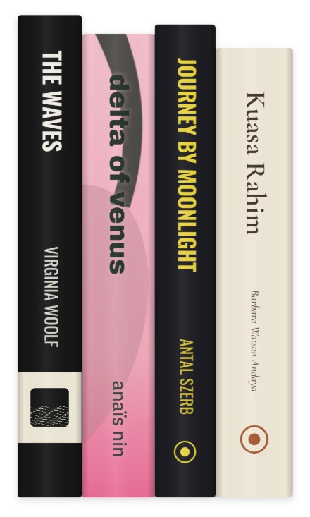

Loading…

Shelve the films and books you love, with their real spines.
Make a shelfHow it works
- Type a film or a book.
- We find a scan of its DVD or book cover and cut out the spine.
- No clean scan? You get a spine made from the poster or cover.
Just shelved More
Loading…
Recently active More
Welcome back.
New from people you follow All activity
Loading…
No one followed yet. Find members
Just shelved More
Loading…